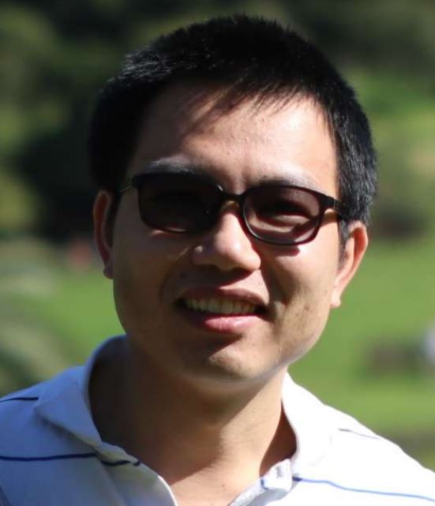

Hai Vu
(Founder and Director) |
Hai L. Vu is a Professor and the recipient of the Australian Research Council (ARC) Future Fellow Award (2012-2016) in the area of Intelligent Transport Systems (ITS). He joined Monash University in 2016 to lead the ITS research. Prior to that, he spent 5 years at the University of Melbourne and 11 years at Swinburne University of Technology where he has had established and led the Intelligent Transport Systems Lab in a joint partnership with VicRoads. He has over 19 years experience as an academic and researcher.
|
|

Nam Hoang
(Research Fellow) |
Dr. Nam H. Hoang is a Research Fellow with the Institute of Transport Studies, in the Department of Civil Engineering. His research focuses on mathematical optimisation frameworks in transport planning and intelligent transportation systems.
|